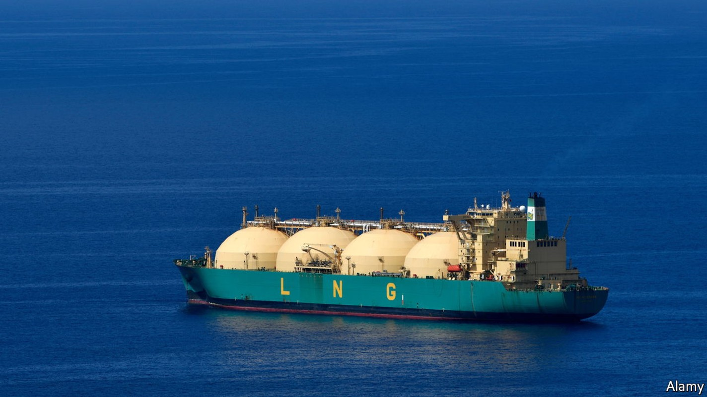
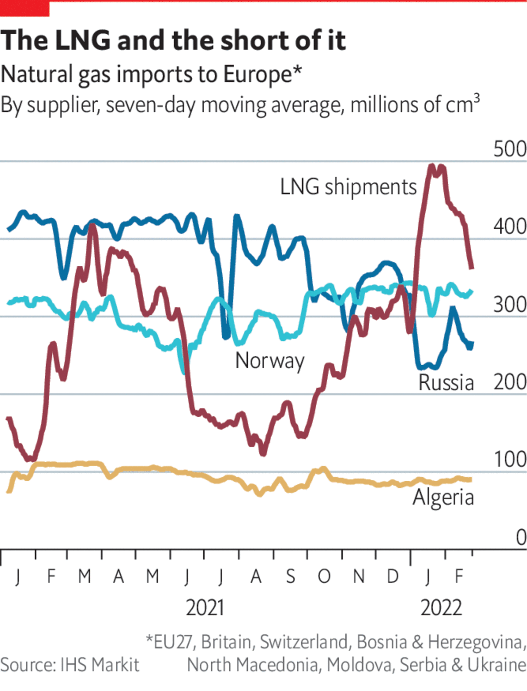

If the supply of Russian gas to Europe were cut off, could LNG plug the gap?
Securing shipments will be difficult and costly in the short term

Editor’s note: On April 26th the state-owned gas firms of Bulgaria and Poland said they had been warned by Gazprom that it would stop all deliveries of gas to them within 24 hours. It would be the first such action by Russia’s energy giant since the outbreak of war in Ukraine. Almost half of Poland’s gas, and nine-tenths of Bulgaria’s, is from Russia.
RUSSIA’S INVASION of Ukraine has led to renewed speculation about the future of European energy, and in particular about its supply of natural gas. The continent gets around a quarter of its energy from gas. In 2019 Russia provided over 40% of that gas. The West has not gone so far as to place limits on Russian gas exports, although Germany has suspended the licensing of Nord Stream 2 (NS2), a completed but not yet operational pipeline between Russia and Germany. But what if Vladimir Putin, Russia’s president, were to cut off gas to the West? One alternative source of energy is liquefied natural gas (LNG), which is usually transported by sea. To what extent could LNG replace piped Russian gas as a source of energy for Europe?
Europe already uses a lot of LNG; it makes up around a quarter of the region’s natural-gas imports. One question is how much more of the stuff Europe can process. LNG is first turned into a liquid in order to be transported; it must then be “re-gassed” at terminals, usually near the coast, before it can be used to heat and power homes. Heavy investments in regasification plants mean that Europe has plenty of idle capacity. The region’s import terminals ran at 45% of capacity last year, according to Energy Intelligence, an industry publisher, although not all of these terminals are in the right place. Germany has no terminals, while Spain has a quarter of the continent’s capacity, even though its gas infrastructure is largely isolated from the rest of Europe.
The more pressing problem is the available supply of LNG. The biggest exporters of LNG are America, Australia and Qatar. Although they all have plenty more gas, all are already exporting at or near full tilt. It takes a long time to expand liquefaction and export capacity, so Europe’s best short-term hope would be to get hold of existing LNG cargoes originally destined for elsewhere. But Asia also has a strong appetite for LNG. China’s imports grew by 82% between 2017 and 2020, for example; last year it overtook Japan as the world’s biggest importer. And around 70% of LNG traded globally is on contracts that run for ten years or more. Europe tends to rely on spot markets and shorter contracts. In the past that has allowed Europe to take advantage of low prices when stocks were plentiful, and ensured that countries did not commit themselves to using fossil fuels decades into the future. But it also leaves Europe at the mercy of the market.

When Europe’s gas reserves dwindled over the autumn and winter, in part because Russian supplies dropped, LNG imports shot up (see chart). So did prices. In the past, spot prices in Asia have typically been higher than in Europe. But in recent months the price in Europe has at times matched Asian levels. The invasion of Ukraine has only made things worse. The delivered price for LNG into north-west Europe rose by 29% in a day, after Mr Putin announced his “special military operation” on February 24th. Politicians are trying to secure new supplies of LNG for Europe. With America unable to provide much more, President Joe Biden has promised to help Europe find sources. So far, his attempts have borne little fruit. On February 22nd Qatar’s energy minister said it was “almost impossible” to quickly supply enough LNG to replace the gas piped from Russia. LNG is not the only lever Europe has to make up a shortfall in Russian supplies but it is an important one—and a hard one to pull. ■
Our recent coverage of the Ukraine crisis can be found here